| 日付 | 2026年5月23日（土） |
|---|---|
| 山域 | 阿武隈周辺 |
| メンバー | 家族（妻、長男） |
| 山行形態 | 日帰り |
| アクセス | 車 |
| ルート (Map) | 第一無料駐車場 (8:53) - (9:44) 生瀬富士 - (9:54) 茨城のジャンダルム - (10:03) 生瀬富士 - (10:22) 立神山 - (10:58) 滝のぞき (11:08) - (11:17) 渡渉点 (11:37) - (12:12) 月居山 (12:47) - (13:09) 月居山登山口 - (13:15) 袋田の滝 (13:57) - (14:05) 第一無料駐車場 |
今週末は関東全域あまり天気が良くない
青空を求めて茨城県の生瀬富士に行くことにする。
袋田の滝のすぐ側にある山で、茨城のジャンダルムと呼ばれる場所がある。
2024年のゴールデンウィーク以来2年振りに、息子も山に連れ出す。
第一無料駐車場に車を停める。標高105m。
高速道路から見た空はどんよりしていたが、現地に着くと見事な青空。
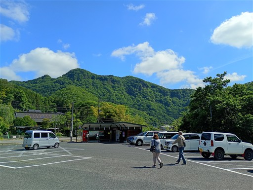
駐車場のすぐそばに登山口がある。
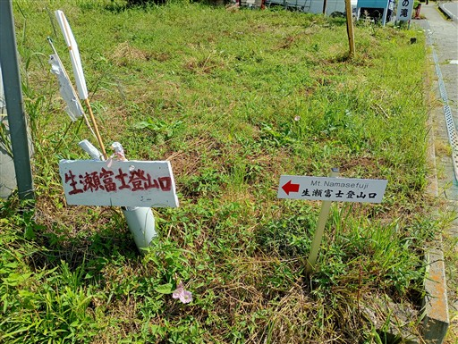
石垣から飛び出た大木。いつかひっくり返りそうだ。
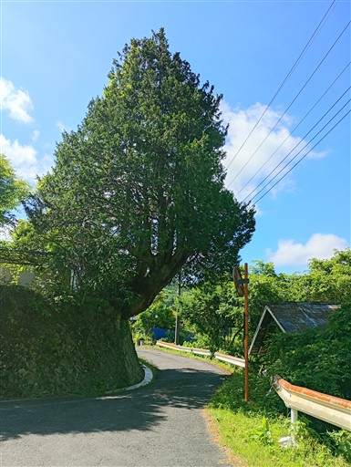
登山道に入って行く。
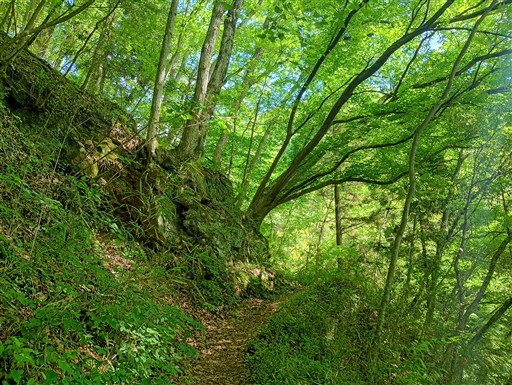
沢沿いの道だからか、周囲はシダが繁茂している。
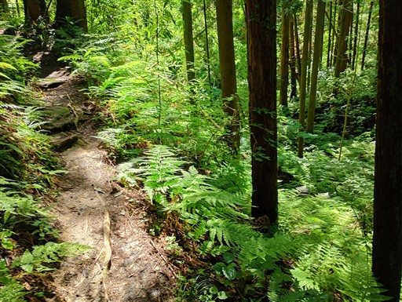
足元を見るとオトシブミが大量に落ちている。
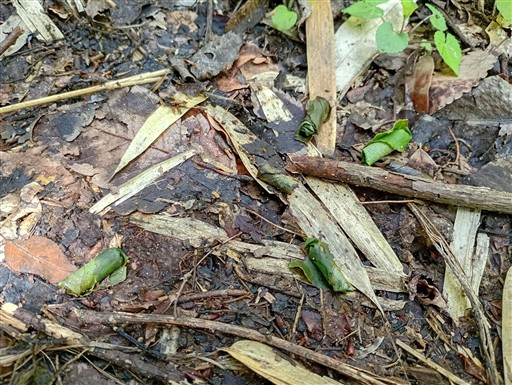
稜線直下は登山道が急斜面になる。
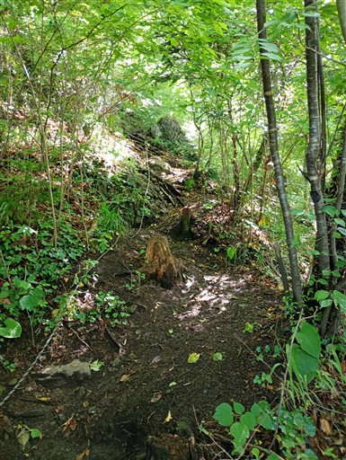
稜線に到達。
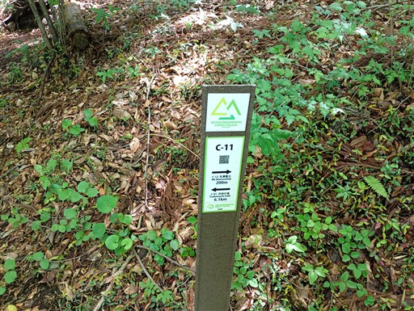
すぐに表れる岩場。
ボロボロの岩に見えるが、ホールドは意外にしっかりしている。
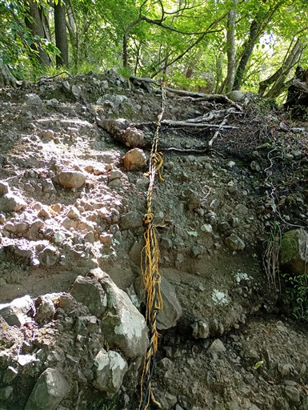
山の勘がだいぶ失われた息子も頑張って登っている。
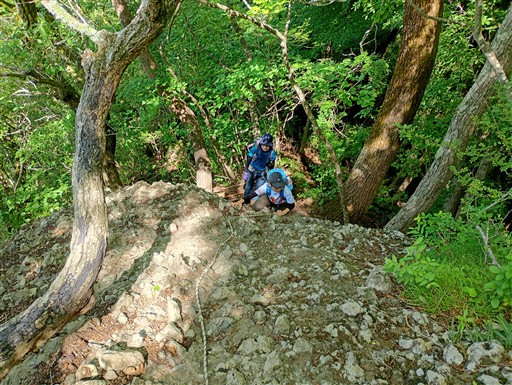
生瀬富士に到着。標高406m。
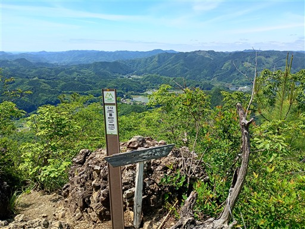
山頂に小さな岩があり、そこに立つと良い景色が見られる。
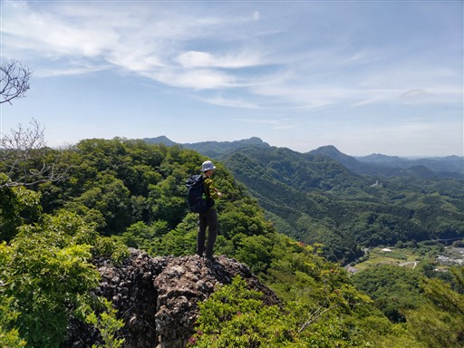
山頂からの展望。目立った山は見えないが、大きく視界が広がる。
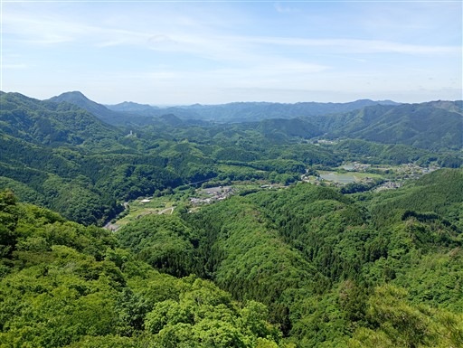
山頂にあったハート形の石。
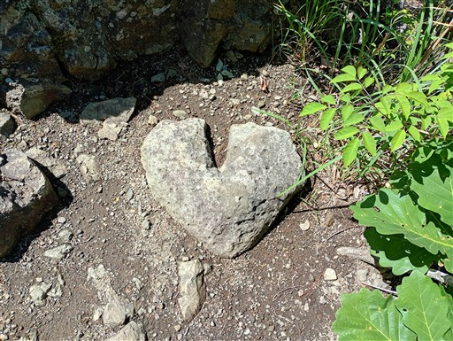
本日のメイン、茨城のジャンダルム。山頂から少し歩くと見えてくる。
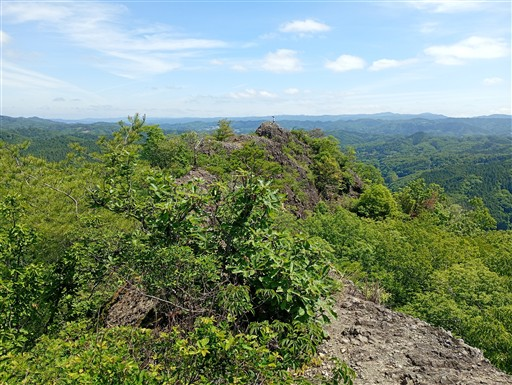
岩を横から回り込む。この岩、直登できそう。
帰りは巻道でなく、こちらの岩に登ることにする。
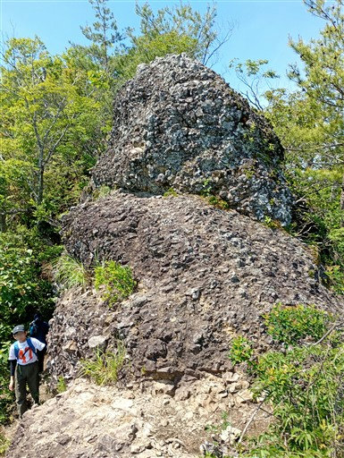
岩尾根が伸びている。高度感はあまりないが、
展望広がる爽快な岩尾根だ。
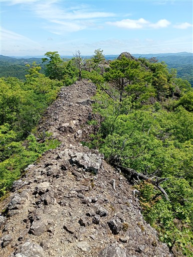
岩場にシモツケが咲いている。
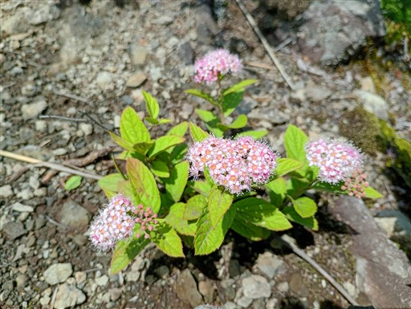
先端に小さな標識がある。
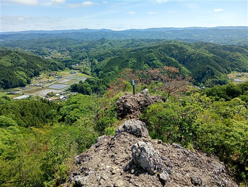
歩いてきた道を振り返る。なかなかの絶壁だ。
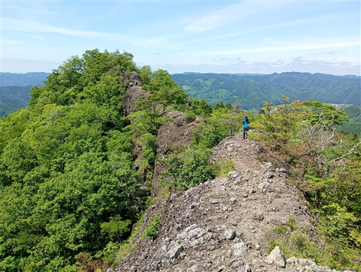
低山であり、周囲の山も低山のため、広がる展望はちょっと地味。
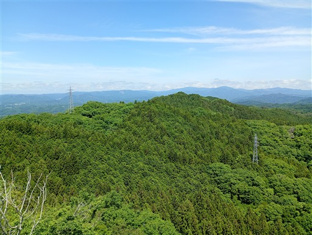
復路は岩に登ってみる。
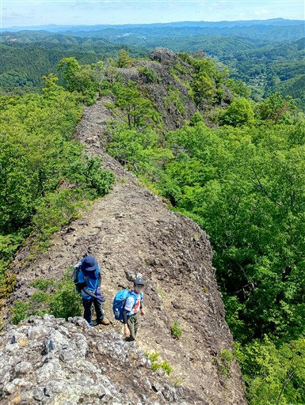
生瀬富士まで戻ったら先に進む。
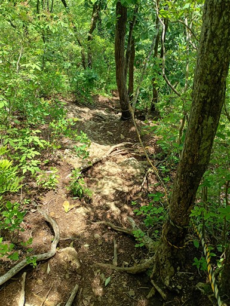
かなり急斜面の道が続く。
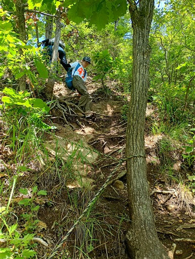
岩場を慎重に下りる。傾斜は緩い。
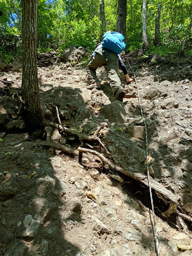
立神山を通過。標高420m。
地味なピークだが本日の最高峰。
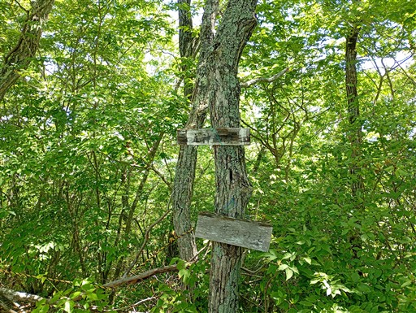
滝のぞきに到着。
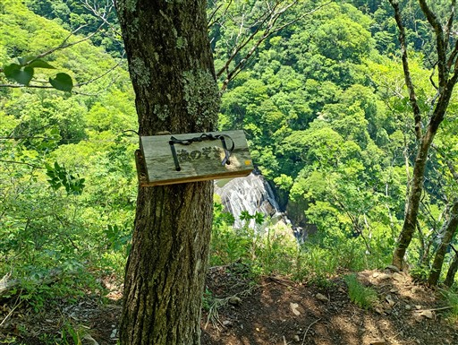
ここから袋田の滝を見下ろすことができる。
四段に流れ落ちる優美な滝だ。
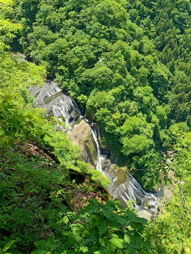
この先は崖なのか、本当に真下に見ることができる。
橋を渡る観光客の姿も良く見える。
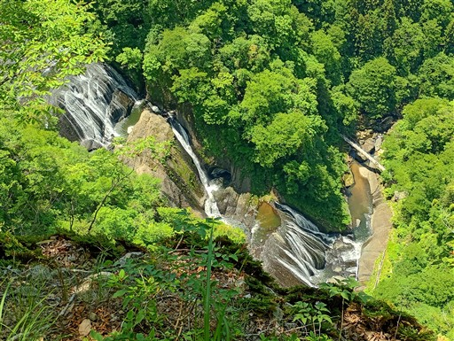
滝の上流部分の川床も眺められて興味深い。
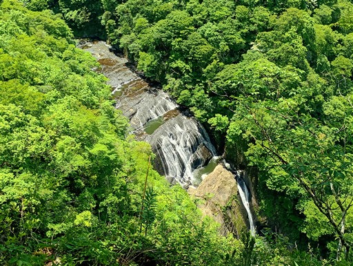
滝のすぐそばに聳えるのは、これから登る月居山。
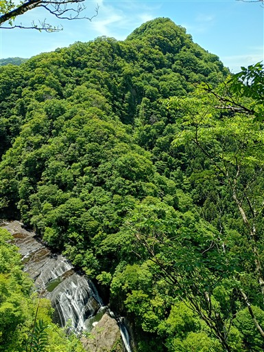
斜面を下りて、川の渡渉点に出てくる。
そこそこ水が流れているのと、どっちに渡れば良いのかが分からず、少し混乱。
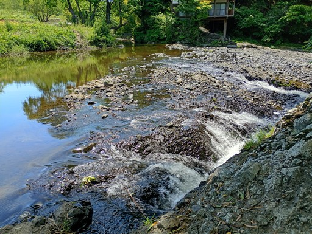
側にあった木橋を置いて二人を渡す。
左の川は渡れそうにないが、そちらは渡らなくても良さそうだ。
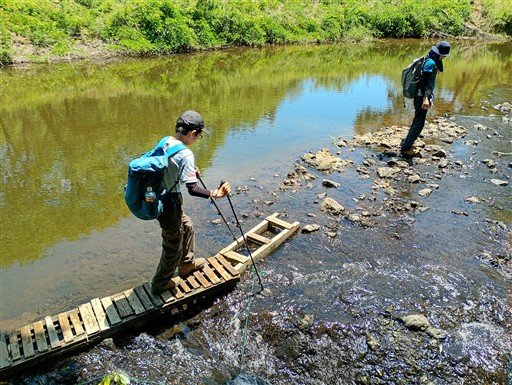
木橋を片付けて自分も渡渉。
帰って調べたら、木橋が置かれているケースが多かった。
なぜ片付けられていたのか分からないが、置きっぱなしでも良かったかもしれない。
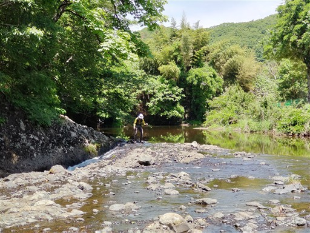
水流のある場所があちらこちらにあるが、適当に渡りやすい場所を歩いていく。
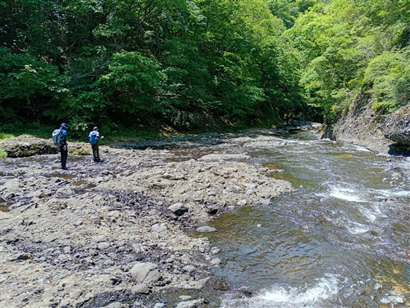
渡渉ポイントはこんな感じ。岩盤を水が薄く流れる、あまり見ない形の渡渉だ。
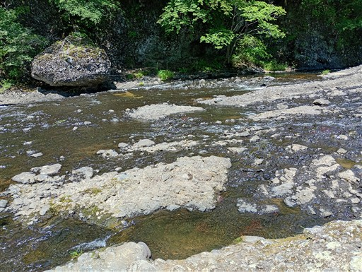
川沿いにニシキウツギの花が咲いている。濃い赤でよく目立つ。
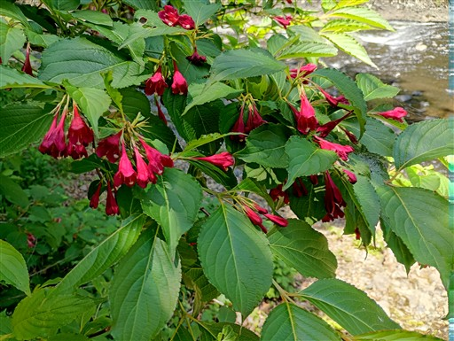
川沿いに建っている謎の建物は貸別荘のようだ。
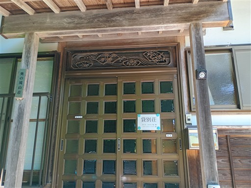
ここから月居山への登山道に入って行く。
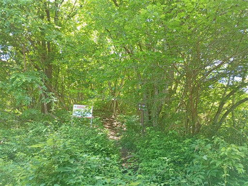
袋田の滝からの道と合流すると、登山道は石段になる。
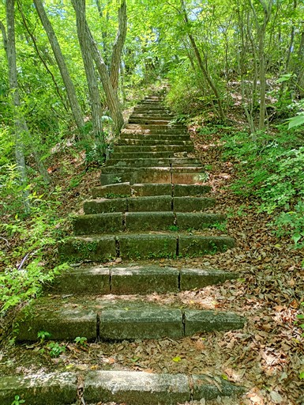
目の前に聳える生瀬富士。低山ながら急峻な山で岩壁も見られる。
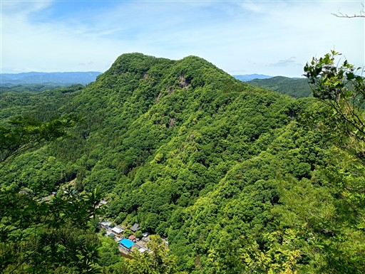
月居観音に到着。ハチに注意と書かれていて残念ながら立入禁止だ。
案内標識によるとかなり歴史がありそうだが、建物は新しそう。
立入禁止がハチが原因なのか分からないが、昔からずっとこのままで整備されてなさそう。
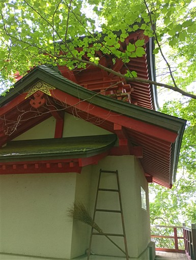
少し下った場所の広場。遠足だろうか？多くの人が休んでいる。
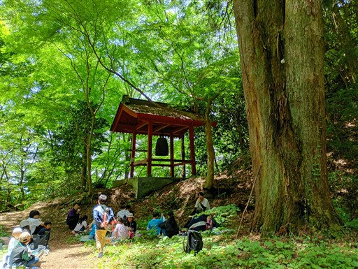
立ち並ぶ石仏。
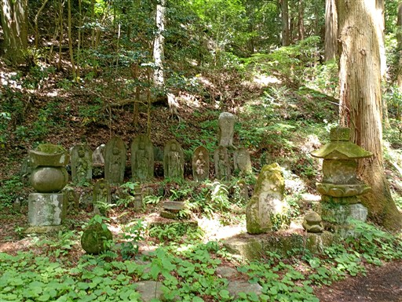
鐘は突いても良さそうだったので一突き。
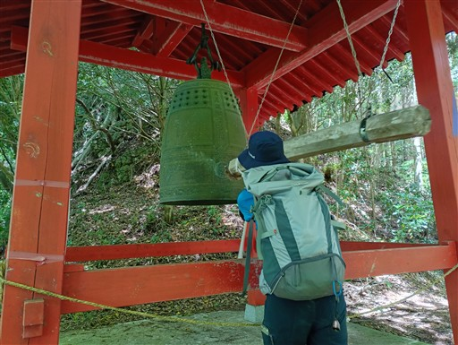
門をくぐって境内の外に出る。
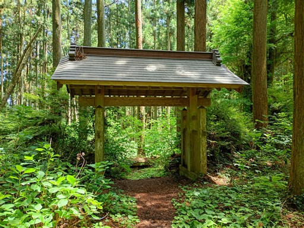
ここから月居山を目指す。
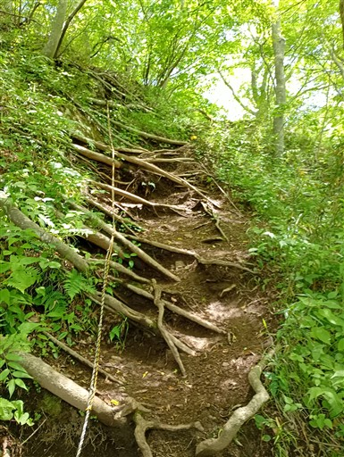
月居城跡に到着。立派な石碑がある。
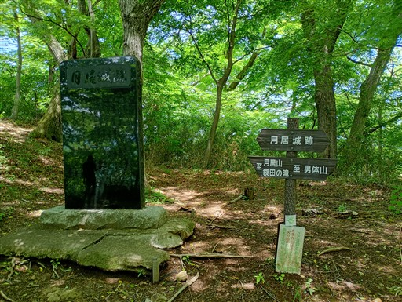
この広場に城が建っていたのだろうか？
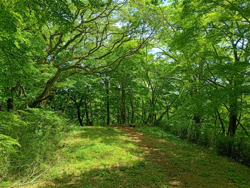
横の少し高台が山頂だろうか？三角点があるが山頂標識は見当たらない。
標高404m。ここで昼食休憩をとる。
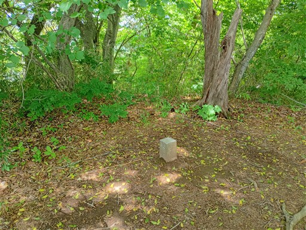
アリの行列があったので行先を調べてみると、木の枝。
ここから蜜が出ているのだろうか？大量のアリが群がっている。
昼食を取ったら下山。
登山口に到着。ここから遠く離れた男体山の登山口も兼ねている。
下りたところは一大観光地。
こいのぼりが泳いでいる。
お金を払って袋田の滝の観瀑台へ。
観瀑台に到着。2013年に2歳の娘と訪れて以来の訪問だ。
水量が少ないからか、残念ながら二段目の滝は左側に水が流れていない。
エレベーターに乗って、上部の観瀑台へ。
こちらは上から全体像を見渡すことができる。
まぁ先ほど、もっと上から全体像を見下ろしたばかりではあるが。
上から見下ろしていた吊り橋へ。
岩壁を見上げる。滝を見下ろしていたのはあの辺りだろう。
吊り橋からの景色。
落ちている岩は生瀬富士の岩質とそっくり。
上から流れ落ちてきたのだろうか？
土産物屋でキーホルダーを購入。
ジェラート屋でジェラートを食べる。
留守番の娘のためにアップルパイを購入。
あとは車道をあるいて駐車場に戻る。
今回の山行は、岩場、展望、渡渉、滝と見所が多かった。
茨城のジャンダルムは規模が小さいながら、そこそこ楽しかったし
袋田の滝を真上から見下ろすのも、高度感があって楽しかった。
久々に息子を連れてきて、中学生の頼りになる姿を期待していたが
案外世話がかかって大変だった。